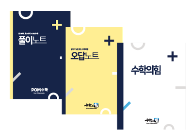

강의식 클래스
- 레벨과 진도가 맞는 학생끼리 반을 편성해 밀도 높은 강의식 수업 진행
- 깊이 연구한 교수학습 프로그램을 바탕으로 학습량과 완성도 강화
- 비슷한 수준의 학생들이 경쟁과 협력을 통해 함께 성장
- 매 수업 일일 테스트와 T-관리로 성취도를 점검
운정 본원 상위권 수학 시스템
선발고사부터 반배정, T-관리까지 이어지는
운정 맞춤형 상위권 수학 학습 설계
수학의힘 운정본원은 선발고사를 통해 상위 40% 이상의 발전 가능성을 지닌 학생을 소신 있게 선발합니다.
강의식 클래스는 전국 학년 상위 40% 이내 학생을 기준으로 선발합니다.
학생의 역량과 성향을 고려하여, 특별한 40%이상 학생의 경우에도 개별진도반에 배정하여 급속한 성장을 유도합니다.
문화 이동 : 하향평준화 → 상향평준화
Program
수학의힘은 강의식 클래스와 개별진도 클래스를 함께 운영하며, 학생의 수준과 학습 성향에 따라 가장 효과적인 학습 흐름을 설계합니다.
끝까지 답을 찾는
Why Power of Math
학생의 수학적 습관은 바꾸고 자신감 상승, 성취능력
철저한 관리를 위해 원장이 정기적으로 검사 실시
1년 4회(3월, 6월, 9월, 11월) Contest 실시
※ 수상자는 연1회 실시되는 전국 Contest 에 참가할 자격 취득

철저한 담임제에 의한 책임 수업제도
반에 따라 정원보다 적을 수 있음
(초등 1학년 7명 / 초등 4~6학년 12명 / 중등 12명 정원제)
저학년이나 학업성취도가 저조한 반의 경우 6명 선으로 담임 재량으로 정원 제한 가능
T-관리 시스템: 매일 테스트를 하고 과제 관리를 철저히 하는 시스템
규칙적인 Test와 과제관리로 학생들의 실력과 성적 향상
Main Events